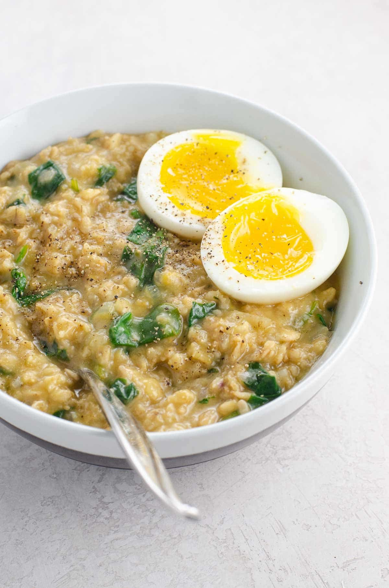

savory oats recipe with spinach (and an egg)

Equally packed with nutrients and umami, this savory oats recipe makes a quick and easy, nutritious, and somehow slightly indulgent-feeling meal. Make a single serving or easily scale it up for a group.
- PREP TIME 5 minutes
- COOK TIME 10 minutes
- TOTAL TIME 15 minutes
Ingredients
- 1 small shallot, minced (about ½ cup)
- ½ cup (40 grams) old-fashioned oats
- 1 ½ cups (350 ml) vegetable or chicken bone broth
- 1 tablespoon (15 ml) reduced-sodium soy sauce or coconut aminos
- 1 generous cup baby spinach leaves
- 1 tablespoon (14 grams) butter, optional
- 1 tablespoon (15 grams) white miso paste, optional
- Sriracha, for serving, optional
- 1 7-minute egg, optional
Instructions
- Place shallot, oats, broth, soy sauce, and spinach in a small pot.
- Bring to a boil over high heat.
- Reduce heat to simmer and cook for about 5 minutes, until oats have softened into a porridge.
- Off the heat, stir in butter and miso paste.
- Transfer to a bowl and top with a drizzle of sriracha and a boiled egg if you like.
Notes
- Old-fashioned rolled oats are heartier than quick oats and make a more robust and toothsome oatmeal. It will keep you full for longer since it takes your bod longer to break them down.
- My favorite boxed vegetable broth by far is Imagine No Chicken lower-sodium broth. It has a great flavor profile and none of the rust-colored nonsense that plagues many other brands. Or you can use chicken broth.
- White miso paste is made from fermented soybeans. It has a salty, sweet, and savory vibe and is among the most mellow of the miso varieties. Buy it here.
- To make this recipe gluten-free, be sure to use certified GF oats, miso, and soy sauce or coconut aminos.
- This recipe has an adaptable flavor profile. You can swap in other quick-cooking vegetables like baby arugula, frozen peas, or corn. Layer in pre-cooked vegetables like crispy roasted broccolini, sautéed zucchini and onion, or sautéed mushrooms. Add cheese, like shredded extra-sharp cheddar or grated parmesan. Or even add more protein, from shredded chicken to black beans to sautéed shrimp and more.
- These oats cook quickly and are at their absolute best shortly after cooking, so I don't recommend going out of your way to make them in advance. That said, if you need to, you can make them in advance and reheat in the microwave or on the stovetop with a big splash of additional broth.
- Leftovers will keep well in an airtight container in the fridge for a week. Reheat as indicated above.
Nutrition Information
CALORIES: 183 TOTAL FAT: 0.1g CARBOHYDRATES: 32.4g FIBER: 5g PROTEIN: 6.5g
click to get back to homepage